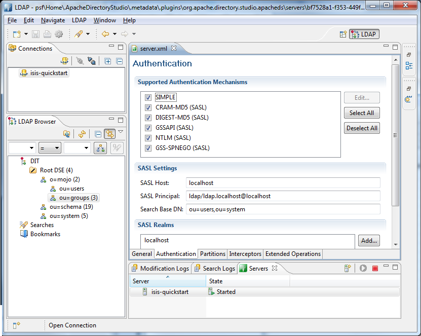
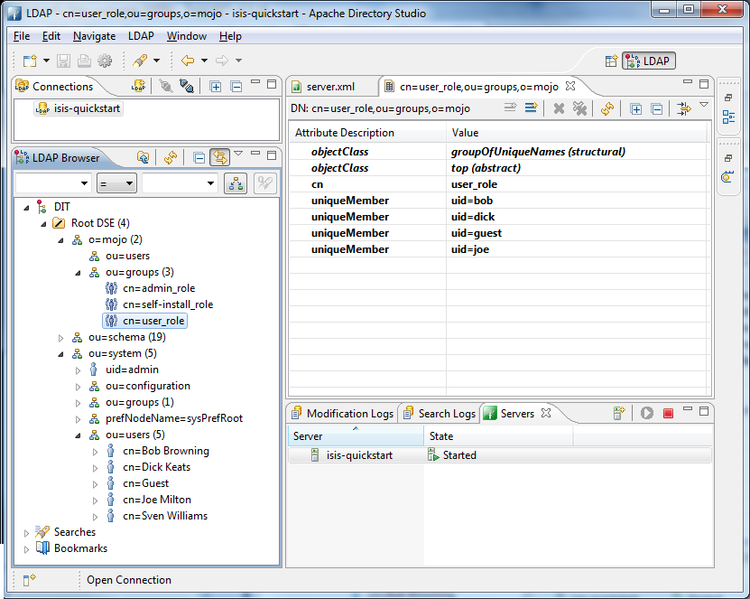
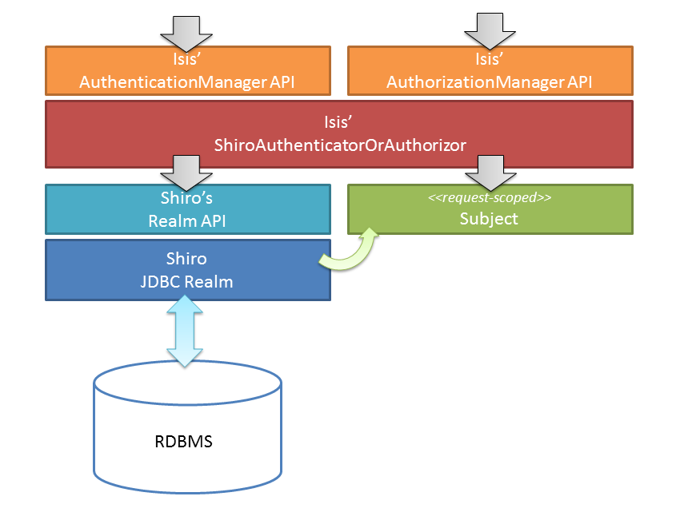

isis.authentication=shiro
isis.authorization=shiro1. Security
This guide describes the authentication and authorization features available to secure your Apache Isis application.
1.1. Other Guides
Apache Isis documentation is broken out into a number of user, reference and "supporting procedures" guides.
The user guides available are:
The reference guides are:
The remaining guides are:
-
Developers' Guide (how to set up a development environment for Apache Isis and contribute back to the project)
-
Committers' Guide (release procedures and related practices)
1.2. Terminology
Apache Isis has built-in support for authentication and authorization:
-
By "authentication" we mean logging into the application using some credentials, typically a username and password. Authentication also means looking up the set of roles to which a user belongs.
-
By "authorization" we mean permissions: granting roles to have access to features (object member) of the app.
Isis has two levels of permissions. Read permission means that the user can view the object member; it will be rendered in the UI. An action with only read permission will be shown disabled ("greyed out". Write permission means that the object member can be changed. For actions this means that they can be invoked.
Isis provides an API for both authentication and authorization, and provides an implementation that integrates with Apache Shiro. Shiro in turn uses the concept of a realm as a source for both authentication and optionally authorization.
Shiro ships with a simple text-based realm — the IniRealm — which reads users (and password), user roles and role permissions from the WEB-INF/shiro.ini file. The SimpleApp archetype is configured to use this realm.
Shiro also ships with an implementation of an LDAP-based realm; LDAP is often used to manage user/passwords and corresponding user groups. Apache Isis in turn extends this with its IsisLdapRealm, which provides more flexibility for both group/role and role/permissions management.
In addition, the (non-ASF) Isis Addons provides the Isis addons' security module, which also provides an implementation of the Shiro Realm API. However, the security module also represents users, roles and permissions as domain objects, allowing them to be administered through Apache Isis itself. Moreover, the security module can optionally delegate password management to a subsidiary (delegate) realm (usually LDAP as discussed above).
In addition to Apache Isis' Shiro-based implementation of its authentication and authorization APIs, Isis also provides a "bypass" implementation, useful for quick-n-dirty prototyping when you want to in effect disable (bypass) security completely.
|
What about auditing?
A further aspect of security is auditing: recording what data was modified by which user. Apache Isis does define two service APIs — Isis does not itself provide any in-built implementations of these APIs, but there are implementations within (non-ASF) Isis Addons, namely the Isis addons' command module and the Isis addons' auditing module. |
2. Configuring Apache Isis to use Shiro
Apache Isis' security mechanism is configurable, specifying an Authenticator and an Authorizor (non-public) APIs. The Shiro security mechanism is an integration wih Apache Shiro that implements both interfaces.
|
The SimpleApp archetype is pre-configured to use Apache Shiro, so much of what follows is set up already. |
2.1. Telling Apache Isis to use Shiro
To tell Apache Isis to use Shiro, update the WEB-INF/isis.properties file:
This installs the appropriate implementation (the ShiroAuthenticatorOrAuthorizor class) that use Shiro’s APIs to perform authentication and authorization:

The figure above doesn’t tell the whole story; we haven’t yet seen how Shiro itself is configured to use realms. The ShiroAuthenticatorOrAuthorizor is in essence the glue between the Apache Isis runtime and Shiro.
2.2. Bootstrapping Shiro
The Shiro environment (in essence, thread-locals holding the security credentials) needs to be bootstrapped using the following settings in the WEB-INF/web.xml file:
<listener>
<listener-class>org.apache.shiro.web.env.EnvironmentLoaderListener</listener-class>
</listener>
<filter>
<filter-name>ShiroFilter</filter-name>
<filter-class>org.apache.shiro.web.servlet.ShiroFilter</filter-class>
</filter>
<filter-mapping>
<filter-name>ShiroFilter</filter-name>
<url-pattern>/*</url-pattern>
</filter-mapping>Based on this Shiro will then read WEB-INF/shiro.ini file to configure its Realm definitions for authentication and authorization.
2.3. WEB-INF/shiro.ini
The shiro.ini file is used to specify the realm(s) that Shiro will delegate to:
securityManager.realms = $realmNameShiro’s ini file supports a "poor-man’s" dependency injection (their words), and so $realmName in the above example is a reference to a realm defined elsewhere in shiro.ini. The subsequent sections describe the specifics for thevarious realm implementations available to you.
It’s also possible to configure Shiro to support multiple realms.
securityManager.realms = $realm1,$realm2You can learn more about Shiro realms in the Shiro documentation.
3. Shiro Ini Realm
Probably the simplest realm to use is Shiro’s built-in IniRealm, which reads from the (same) WEB-INF/shiro.ini file.
This is suitable for prototyping, but isn’t intended for production use, if only because user/password credentials are stored in plain text. Nevertheless, it’s a good starting point. The app generated by the SimpleApp archetype is configured to use this realm.
The diagram below shows the Isis and components involved:

The realm is responsible for validating the user credentials, and then creates a Shiro Subject which represents the user (for the current request). Apache Isis Authenticator component then interacts with the Subject in order to check permissions.
3.1. Shiro Configuration
To use the built-in IniRealm, we add the following to WEB-INF/shiro.ini:
securityManager.realms = $iniRealm(Unlike other realms) there is no need to "define" $iniRealm; it is automatically available to us.
Specifying $iniRealm means that the usernames/passwords, roles and permissions are read from the shiro.ini file itself. Specifically:
-
the users/passwords and their roles from the
[users]sections; -
the roles are mapped to permissions in the
[roles]section.
The format of these is described below.
3.1.1. [users] section
This section lists users, passwords and their roles.
For example:
sven = pass, admin_role
dick = pass, user_role, analysis_role, self-install_role
bob = pass, user_role, self-install_roleThe first value is the password (eg "pass", the remaining values are the role(s).
3.1.2. [roles] section
This section lists roles and their corresponding permissions.
For example:
user_role = *:ToDoItems:*:*,\
*:ToDoItem:*:*,\
*:ToDoAppDashboard:*:*
analysis_role = *:ToDoItemAnalysis:*:*,\
*:ToDoItemsByCategoryViewModel:*:*,\
*:ToDoItemsByDateRangeViewModel:*:*
self-install_role = *:ToDoItemsFixturesService:install:*
admin_role = *The value is a comma-separated list of permissions for the role. The format is:
packageName:className:memberName:r,wwhere:
-
memberNameis the property, collection or action name. -
rindicates that the member is visible -
windicates that the member is usable (editable or invokable)
and where each of the parts of the permission string can be wildcarded using *.
Because these are wildcards, a '*' can be used at any level. Additionally, missing levels assume wildcards.
Thus:
com.mycompany.myapp:Customer:firstName:r,w # view or edit customer's firstName
com.mycompany.myapp:Customer:lastName:r # view customer's lastName only
com.mycompany.myapp:Customer:placeOrder:* # view and invoke placeOrder action
com.mycompany.myapp:Customer:placeOrder # ditto
com.mycompany.myapp:Customer:*:r # view all customer class members
com.mycompany.myapp:*:*:r # view-only access for all classes in myapp package
com.mycompany.myapp:*:*:* # view/edit for all classes in myapp package
com.mycompany.myapp:*:* # ditto
com.mycompany.myapp:* # ditto
com.mycompany.myapp # ditto
* # view/edit access to everything|
The format of the permissions string is configurable in Shiro, and Apache Isis uses this to provide an extended wildcard format, described here. |
3.2. Externalized IniRealm
There’s no requirement for all users/roles to be defined in the shiro.ini file. Instead, a realm can be defined that loads its users/roles from some other resource.
For example:
$realm1=org.apache.shiro.realm.text.IniRealm (1)
realm1.resourcePath=classpath:webapp/realm1.ini (2)| 1 | happens to (coincidentally) be the same implementation as Shiro’s built-in $iniRealm |
| 2 | in this case load the users/roles from the src/main/resources/webapp/realm1.ini file. |
Note that a URL could be provided as the resourcePath, so a centralized config file could be used. Even so, the
|
If configured this way then the |
4. Isis Ldap Realm
Isis ships with an implementation of Apache Shiro's Realm class that allows user authentication and authorization to be performed against an LDAP server.

The LDAP database stores the user/passwords and user groups, while the shiro.ini file is used to map the LDAP groups to roles, and to map the roles to permissions.
4.1. Shiro Configuration
To use LDAP involves telling Shiro how to instantiate the realm. This bootstrapping info lives in the WEB-INF/shiro.ini:
contextFactory = org.apache.isis.security.shiro.IsisLdapContextFactory
contextFactory.url = ldap://localhost:10389
contextFactory.systemUsername = uid=admin,ou=system (1)
contextFactory.systemPassword = secret
contextFactory.authenticationMechanism = CRAM-MD5 (2)
contextFactory.systemAuthenticationMechanism = simple
ldapRealm = org.apache.isis.security.shiro.IsisLdapRealm (3)
ldapRealm.contextFactory = $contextFactory
ldapRealm.searchBase = ou=groups,o=mojo (4)
ldapRealm.groupObjectClass = groupOfUniqueNames (5)
ldapRealm.uniqueMemberAttribute = uniqueMember (6)
ldapRealm.uniqueMemberAttributeValueTemplate = uid={0}
# optional mapping from physical groups to logical application roles
ldapRealm.rolesByGroup = \ (7)
LDN_USERS: user_role,\
NYK_USERS: user_role,\
HKG_USERS: user_role,\
GLOBAL_ADMIN: admin_role,\
DEMOS: self-install_role
ldapRealm.permissionsByRole=\ (8)
user_role = *:ToDoItemsJdo:*:*,\
*:ToDoItem:*:*; \
self-install_role = *:ToDoItemsFixturesService:install:* ; \
admin_role = *
securityManager.realms = $ldapRealm| 1 | user accounts are searched using a dedicated service account |
| 2 | SASL (CRAM-MD5) authentication is used for this authentication |
| 3 | Apache Isis' implementation of the LDAP realm. |
| 4 | groups are searched under ou=groups,o=mojo (where mojo is the company name) |
| 5 | each group has an LDAP objectClass of groupOfUniqueNames |
| 6 | each group has a vector attribute of uniqueMember |
| 7 | groups looked up from LDAP can optionally be mapped to logical roles; otherwise groups are used as role names directly |
| 8 | roles are mapped in turn to permissions |
The value of uniqueMember is in the form uid=xxx, with xxx being the uid of the user
* users searched under ou=system
* users have, at minimum, a uid attribute and a password
* the users credentials are used to verify their user/password
The above configuration has been tested against ApacheDS, v1.5.7. This can be administered using Apache Directory Studio, v1.5.3.
|
Shiro Realm Mappings
When configuring role based permission mapping, there can only be one of these entries per realm: and This forces you to put everything on one line for each of the above. This is, unfortunately, a Shiro "feature". And if you repeat the entries above then it’s "last one wins".) To make the configuration maintainable, use "\" to separate the mappings onto separate lines in the file. Use this technique for both group to roles mapping and role to permission mapping. If you use the '' after the "," that separates the key:value pairs it is more readable. |
4.2. Externalizing role perms
As an alternative to injecting the permissionsByRole property, the role/permission mapping can alternatively be specified by injecting a resource path:
ldapRealm.resourcePath=classpath:webapp/myroles.iniwhere myroles.ini is in src/main/resources/webapp, and takes the form:
[roles]
user_role = *:ToDoItemsJdo:*:*,\
*:ToDoItem:*:*
self-install_role = *:ToDoItemsFixturesService:install:*
admin_role = *This separation of the role/mapping can be useful if Shiro is configured to support multiple realms (eg an LdapRealm based one and also an TextRealm)
4.3. Active DS LDAP tutorial
The screenshots below show how to setup LDAP accounts in ApacheDS using the Apache Directory Studio.
The setup here was initially based on this tutorial, however we have moved the user accounts so that they are defined in a separate LDAP node.
To start, create a partition in order to hold the mojo node (holding the groups):

Create the ou=groups,o=mojo hierarchy:

Configure SASL authentication. This means that the checking of user/password is done implicitly by virtue of Apache Isis connecting to LDAP using these credentials:

In order for SASL to work, it seems to be necessary to put users under o=system. (This is why the setup is slightly different than the tutorial mentioned above):

Configure the users into the groups:

5. Security Module Realm
The Isis Addons' security module (not ASF) provides a complete security subdomain for users, roles, permissions; all are persisted as domain entities.
What that means, of course, that they can also be administered through your Isis application. Moreover, the set of permissions (to features) is derived completely from your application’s metamodel; in essence the permissions are "type-safe".
In order to play along, the module includes a Shiro realm, which fits in as follows:
The general configuration is as follows:

where the IsisModuleSecurityRealm realm is the implementation provided by the module.
In the configuration above user passwords are stored in the database. The module uses jBCrypt so that passwords are only stored in a (one-way) encrypted form in the database.
The security module also supports a slightly more sophisticated configuration. Most organizations use LDAP for user credentials, and maintaining two separate user accounts would be less than ideal. The IsisModuleSecurityRealm can therefore be configured with a subsidiary "delegate" realm that is responsible for performing the primary authentication of the user; if that passes then a user is created (as a domain entity) automatically.
In most cases this delegate realm will be the LDAP realm, and so the architecture becomes:

The security module has many more features than are described here, all of which are described in the module’s README. The README also explains in detail how to configure an existing app to use this module.
You can also look at the Isisaddons todoapp example (not ASF), which is preconfigured to use the security module.
6. Shiro JDBC Realm
There is nothing to stop you from using some other Realm implementation (or indeed writing one yourself). For example, you could use Shiro’s own JDBC realm that loads user/password details from a database.
|
If you are happy to use a database then we strongly recommend you use the Isis addons' security module instead of a vanilla JDBC; it is far more sophisticated and moreover gives you the ability to administer the system from within your Isis application. |
If you go down this route, then the architecture is as follows:

There’s quite a lot of configuration required (in WEB-INF/shiro.ini) to set up a JDBC realm, so we’ll break it out into sections.
First, we need to set up the connection to JDBC:
jdbcRealm=org.apache.shiro.realm.jdbc.JdbcRealm (1)
jof = org.apache.shiro.jndi.JndiObjectFactory (2)
jof.resourceName = jdbc/postgres (3)
jof.requiredType = javax.sql.DataSource
jof.resourceRef = true
jdbcRealm.dataSource = $jof (4)| 1 | instantiate the JDBC realm |
| 2 | instantiate factory object to lookup DataSource from servlet container |
| 3 | name of the datasource (as configured in web.xml) |
| 4 | instruct JDBC realm to obtain datasource from the JNDI |
We next need to tell the realm how to query the database. Shiro supports any schema; what matters is the input search argument and the output results.
jdbcRealm.authenticationQuery = \ (1)
select password \
from users \
where username = ?
jdbcRealm.userRolesQuery = \ (2)
select r.label \
from users_roles ur \
inner join roles r \
on ur.role_id = r.id \
where user_id = ( \
select id \
from users \
where username = ?); \
jdbcRealm.permissionsQuery= \ (3)
select p.permission \
from roles_permissions rp \
inner join permissions p \
on rp.permission_id = p.id \
where rp.role_id = ( \
select id \
from roles \
where label = ?);
jdbcRealm.permissionsLookupEnabled=true (4)| 1 | query to find password for user |
| 2 | query to find roles for user |
| 3 | query to find permissions for role |
| 4 | enable permissions lookup |
|
The |
We also should ensure that the passwords are not stored as plain-text:
dps = org.apache.shiro.authc.credential.DefaultPasswordService (1)
pm = org.apache.shiro.authc.credential.PasswordMatcher (2)
pm.passwordService = $dps
jdbcRealm.credentialsMatcher = $pm (3)| 1 | mechanism to encrypts password |
| 2 | service to match passwords |
| 3 | instruct JDBC realm to use password matching service when authenticating |
And finally we need to tell Shiro to use the realm, in the usual fashion:
securityManager.realms = $jdbcRealmUsing the above configuration you will also need to setup a DataSource. The details vary by servlet container, for example this is how to do the setup on Tomcat 8.0.
|
The name of the |
7. Enhanced Wildcard Permission
If using the text-based IniRealm or Isis' LDAP realm, then note that Shiro also allows the string representation of the permissions to be mapped (resolved) to alternative Permission instances. Apache Isis provides its own IsisPermission which introduces the concept of a "veto".
A vetoing permission is one that prevents access to a feature, rather than grants it. This is useful in some situations where most users have access to most features, and only a small number of features are particularly sensitive. The configuration can therefore be set up to grant fairly broad-brush permissions and then veto permission for the sensitive features for those users that do not have access.
The string representation of the IsisPermission uses the following format:
([!]?)([^/]+)[/](.+)where:
-
the optional
!prefix indicates this permission is a vetoing permission -
the optional
xxx/prefix is a permission group that scopes any vetoing permissions -
the remainder of the string is the permission (possibly wildcarded, with :rw as optional suffix)
For example:
user_role = !reg/org.estatio.api,\
!reg/org.estatio.webapp.services.admin,\
reg/* ; \
api_role = org.estatio.api ;\
admin_role = adm/*sets up:
-
the
user_rolewith access to all permissions except those inorg.estatio.apiandorg.estatio.webapp.services.admin -
the
api_rolewith access to all permissions inorg.estatio.api -
the
admin_rolewith access to everything.
The permission group concept is required to scope the applicability of any veto permission. This is probably best explained by an example. Suppose that a user has both admin_role and user_role; we would want the admin_role to trump the vetos of the user_role, in other words to give the user access to everything.
Because of the permission groups, the two "!reg/...+""" vetos in user_role only veto out selected permissions granted by the "reg/" permissions, but they do not veto the permissions granted by a different scope, namely "adm/+".
The net effect is therefore what we would want: that a user with both admin_role and user_role would have access to everything, irrespective of those two veto permissions of the user_role.
Finally, the Apache Isis permission resolver is specified in WEB-INF/shiro.ini file:
permissionResolver = org.apache.isis.security.shiro.authorization.IsisPermissionResolver
myRealm.permissionResolver = $permissionResolver (1)| 1 | myRealm is the handle to the configured realm, eg $iniRealm or $isisLdapRealm etc. |
8. Bypassing security
The bypass security component consists of an implementation of both the AuthenticationManager and AuthorizationManager APIs, and are intended for prototyping use only.
The authentication manager allows access with any credentials (in a sense, "bypassing" authentication), while the authorization manager provides access to all class members (in a sense, "bypassing" authorization).
To tell Apache Isis to bypass security, just update the WEB-INF/isis.properties file:
isis.authentication=bypass
isis.authorization=bypassThis installs the appropriate no-op implementations for both authentication and authorization:

9. API for Applications
Generally speaking your domain objects (or more generally your application) should be agnostic of the user/roles that are interacting with them; applying security permissions is the responsibility of the framework.
Still, on very rare occasion you may have a need, in which case you can either use Apache Isis' DomainObjectContainer API or you can reach further down the stack and use the JEE Servlet API.
9.1. DomainObjectContainer API
The DomainObjectContainer service exposes the following API:
final UserMemento user = container.getUser();
final List<RoleMemento> roles = user.getRoles();
for (RoleMemento role : roles) {
String roleName = role.getName();
...
}Each role’s name property encodes both the realm that provided the role, and the role identity itself.
For example, in the simpleapp, if logging in as dick with the following entries for realm1:
dick = pass, user_role, analysis_role, self-install_rolethen this corresponds to the roles "realm1:user_role", "realm1:self-install_role" and "realm1:analysis_role".
If using the Wicket viewer, then note there will also be another role which is used internally (namely "org.apache.isis.viewer.wicket.roles.USER").
9.2. Servlet API
On occasion you may find it necessary to reach below Isis and to the underlying servlet API. For example, the Isis addons' togglz module (non-ASF) has a requirement to do this in order to expose its embedded togglz web console. (
|
If you do need to access the servlet API and are running within the context of Wicket viewer, the Isis addons' servletapi module can provide access to the |
In this situation, you can still obtain some information about the user and its roles:
Principal principal = httpServletRequest.getPrincipal();
String username = principal.getName();
boolean analyst = httpServletRequest.isUserInRole("analysis_role");However, it isn’t possible to obtain any role permissions for the user.
10. Usage by Apache Isis' Viewers
By and large the security mechanisms within Isis are transparent to the rest of the framework (the Wicket Viewer and Restful Objects viewer, and the overall runtime).
That said, it is the responsibility of the viewers to ensure that there is a viewers to ensure that for each request there is a valid user session present. The sections below explain how this works.
10.1. Wicket Viewer
The Wicket viewer defines a relatively small number of pages (by which we mean subclasses of org.apache.wicket.markup.html.WebPage):
-
about page
-
action prompt page
-
entity page
-
error page
-
home page
-
standalone collection page
-
value page
-
void return page
All of these (except about page) are annotated with the Wicket annotation:
@AuthorizeInstantiation("org.apache.isis.viewer.wicket.roles.USER")which means that they can only be accessed by a user with an authenticated session that has this special, reserved role. If not, Wicket will automatically redirect the user to the sign-in page.
|
The sign-in page to render is pluggable; see extensions chapter for details. |
In the sign-in page the viewer calls to the Isis Authenticator API, and obtains back a user/role. It also adds in its special reserved role (per the annotation above) and then continues on to whichever page the user was attempting to access (usually the home page).
And that’s really all there is to it. When the viewer renders a domain object it queries the Apache Isis metamodel, and suppresses from the view any object members (properties, actions etc) that are invisible. These may be invisible because the user has no (read ) permission, or they may be invisible because of domain object logic (eg a hideXxx() method). The viewer neither knows nor cares.
Similarly, for those object members that are visible, the viewer also checks if they are enabled or disabled. Again, an object member will be disabled if the user does not have (write) permission, or it could be disabled because of domain object logic (eg a disableXxx() method).
10.1.1. User-registration
As well as providing a sign-in screen, the Wicket viewer also provides the ability for users to self-register. By and large this operates outside of Apache Isis' security mechanisms; indeed the various pages (sign-up, sign-up verification, password reset) are all rendered without there being any current user session. These pages all "reach inside" Apache Isis framework using a mechanism similar to Headless access in order to actually do their stuff.
|
The sign-in verification page to render is pluggable; see extensions chapter for details. |
User registration is only available if the UserRegistrationService is configured; this is used by the framework to actually create new instances of the user as accessed by the corresponding (Shiro) realm.
Because Shiro realms are pluggable, the Apache Isis framework does not provide default implementations of this service. However, if you are using the Isis addons' security module (non-ASF), then this module does provide an implementation (that, as you might expect, creates new "user" domain entities).
If you are using an LDAP realm and want to enable user-self registration then you’ll need to write your own implementation of this service.
10.2. Restful Objects Viewer
Unlike the Wicket viewer, the Restful Objects viewer does not provide any sort of login page; rather it provides a pluggable authentication strategy, delegated to by the IsisSessionFilter filter defined in web.xml. The authentication strategy is responsible for ensuring that a session is available for the REST resource.
The API of AuthenticationSessionStrategy is simply:
package org.apache.isis.core.webapp.auth;
...
public interface AuthenticationSessionStrategy {
AuthenticationSession lookupValid( (1)
ServletRequest servletRequest,
ServletResponse servletResponse);
void bind( (2)
ServletRequest servletRequest,
ServletResponse servletResponse,
AuthenticationSession authSession);
}| 1 | returns a valid AuthenticationSession for the specified request, response |
| 2 | binds (associates the provided AuthenticationSession) to the request and response |
Here AuthenticationSession is Apache Isis' internal API that represents a signed-on user.
The framework provides a number of simple strategies:
-
AuthenticationSessionStrategyBasicAuthimplements the HTTP basic auth protocol (the pop-up dialog box shown by the web browser) -
AuthenticationSessionStrategyHeaderthat simply reads the user identity from an HTTP header -
AuthenticationSessionStrategyTrustedthat always logs in with a special "exploration" user
As you can see, none of these should be considered production-quality.
The strategy is configured in web.xml; for example:
<filter>
<filter-name>IsisSessionFilterForRestfulObjects</filter-name>
<filter-class>org.apache.isis.core.webapp.IsisSessionFilter</filter-class>
<init-param>
<param-name>authenticationSessionStrategy</param-name>
<param-value> (1)
org.apache.isis.viewer.restfulobjects.server.authentication.AuthenticationSessionStrategyBasicAuth
</param-value>
</init-param>
<init-param>
<param-name>whenNoSession</param-name>
<param-value>auto</param-value> (2)
</init-param>
<init-param>
<param-name>passThru</param-name>
<param-value>/restful/swagger</param-value> (3)
</init-param>
</filter>| 1 | configure basic auth strategy |
| 2 | what to do if no session was found; we use auto so as to issue a 401 status code with basic authentication challenge if the request originated from a web browser. (Prior to 1.11.0 this parameter was set either to basicAuthChallenge (which works when requested from web browser) or to unauthorized (which works when requested from a suitably coded custom Javascript app). |
| 3 | which paths are allowed to be accessed directly, without a session. The /restful/swagger path provides access to the SwaggerResource that dynamically generates swagger spec files from the Apache Isis metamodel. |
The above filter must then be chained before the servlet that actually handles the REST requests:
<filter-mapping>
<filter-name>IsisSessionFilterForRestfulObjects</filter-name>
<servlet-name>RestfulObjectsRestEasyDispatcher</servlet-name>
</filter-mapping>
...
<servlet>
<servlet-name>RestfulObjectsRestEasyDispatcher</servlet-name>
<servlet-class>org.jboss.resteasy.plugins.server.servlet.HttpServletDispatcher</servlet-class>
</servlet>|
The above |
10.2.1. User-registration
Isis currently does not have any out-of-the-box support for user-registration for applications using only the Restful viewer. However, in principal the pieces do exist to put together a solution.
The general idea is similar to the design of the Wicket viewer; define some subsidiary resources that can operate without a user session in place, and which "reach into" the framework using headless access in order to setup the user.
|
An alternative approach, possibly less work and overall of more value, would be to implement |
The following steps sketch out the solution in a little more detail:
-
Define some new Restful resources (cf
DomainServiceResourceServersidethat correspond to sign-up/register page, egSignupResource@Path("/signup") public class SignupResource { ... } -
Create a new subclass of
RestfulObjectsApplication, eg "CustomRestfulObjectsApplication" and register your resourcespublic class CustomRestfulObjectsApplication extends RestfulObjectsApplication { public CustomRestfulObjectsApplication() { addClass(SignupResource.class); } } -
Register your application class in
web.xmlinstead of the default:<context-param> <param-name>javax.ws.rs.Application</param-name> <param-value>com.mycompany.myapp.CustomRestfulObjectsApplication</param-value> </context-param>
So far this is just standard javax.rs stuff.
Next, we need to ensure that a client can hit your new resource with the Apache Isis runtime in place, but without there being an Apache Isis session. For that….
-
create a subclass of the
AuthenticationSessionStrategythat automatically returns a dummy session if the resource being accessed is "/restful/signup", say.You could do this by subclassing
AuthenticationSessionStrategyBasicAuth, but then using code fromAuthenticationSessionStrategyBasicAuthto return an "exploration" (or better, "signup") session if accessing the "/restful/signup" resource. -
in the
SignUpResourceresource, you can then do a lookup of theUserRegistrationServicein order to allow the user to be created:final UserRegistrationService userRegistrationService = IsisContext.getPersistenceSession().getServicesInjector().lookupService(UserRegistrationService.class); userRegistrationService.registerUser(userDetails);
Obviously the methods exposed by the SignupResource are up to you; ultimately they need to be able to gather information to populate the UserDetails object as passed to the UserRegistrationService.